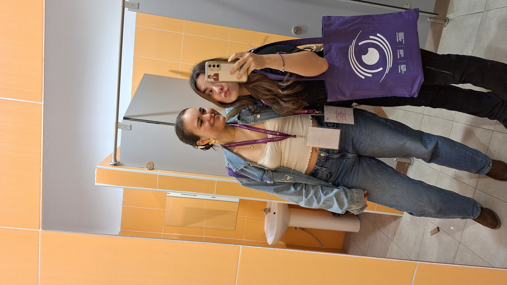
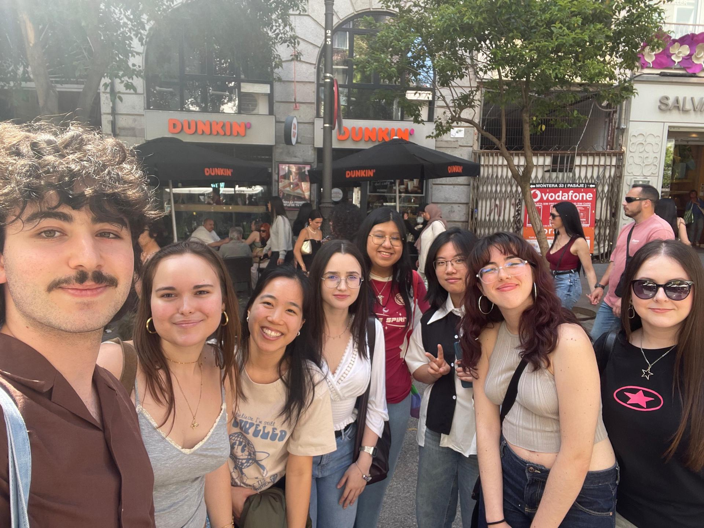

Book Club The Restricted Section
Personal Project
During my final year of university, I decided to found a student reading association at the UCM Faculty of Psychology. I’ve always been passionate about books, fantasy and literary worlds, so I started this club as a way to connect with other readers on campus.
After a lot of hard work, we held our first session in October 2025, starting with a horror and mystery theme. We change the theme every month (fantasy, romance, dark academia…) to read different books together. Along with my leadership team, we’ve managed to run a full year of continuous sessions, establishing ourselves as one of the most active associations in the Faculty of Psychology.

Since this is one of the projects I’ve put the most heart into, I’m incredibly proud of all the readers I’ve met and my team, who have truly become like family to me. I’m so grateful to everyone who has been part of this journey, and I really hope the club continues to thrive even after the leadership changes!
Click here to check our InstagramA wider space to highlight activities and collaborations.